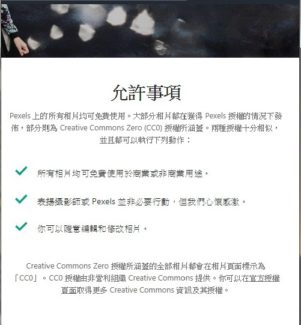

計畫要素
壹、 你們從事本次網界博覽會專題研究計劃的研究與活動如何有助於你們的學校教學和課程需求？
升學上的輔助，例如：推甄
團體之間的互助、合作
與課程結合讓我們更了解如何製作網頁
貳、你們使用了那些資訊科技來完成你們的網界博覽會專題研究
| 名稱 | 用途 |
| Adobe photoshop、 Illustrator | 美工設計、圖像處理 |
| Google Chrome | 查詢資料 |
| Google 試算表 | 製作圖表 |
| Facebook Messenger | 群組溝通 |
叁、你們用什麼方法透過線上或個人接觸來扮演你們網界博覽會專題研究計劃「大使」或發言人角色？
我們透過實地採訪的方式，前往新北市的兩間動物之家，了解到流浪動物的處理跟照顧流程，讓我們可以使此簡報內容更加完善
肆、你們的專題研究計劃對你們產生了什麼樣的影響和衝擊？
參訪完動物之家後，才發現實際上和我們認知的不同，雖然知道有很多流浪貓狗，但親眼看到那個數量是非常驚人的。也了解了團隊合作的重要性，也了解推動動物保護在台灣的艱困
伍、專題網頁作品智慧財產權說明
| 使用部分 | 介紹 | 連結 |
| 貓、狗等素材圖片 | 本網站圖片皆可在網頁製作中使用 | pngimg 、pixabay |
| 背景圖 | 所有相片均可免費使用於商業或非商業用途。
 |
pexels |
| 採訪照片 | 自行前往 | |